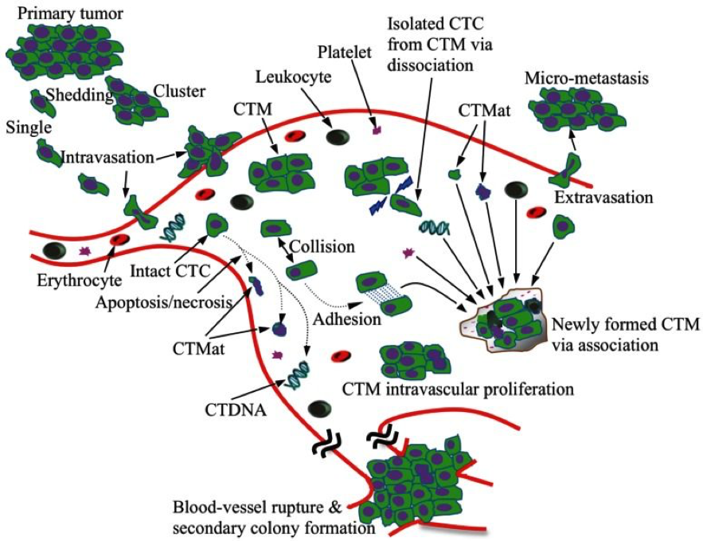

The Alliance of Advanced BioMedical Engineering, (https://aabme.asme.org/) reports a significant advancement in microfluidic device detection of circulating tumor cells (CTC). Cancer metastasis remains one of medicine’s most difficult and deadly problems. The American Cancer Society reports that nearly 90% of cancer deaths are due to metastatic cancers. Deadly cancer cells detach from primary tumor sites, circulating around the body until they infect new tissue. The process is treacherous and hard to detect.
From Theranostics Figure 1, https://www.ncbi.nlm.nih.gov/pmc/articles/PMC3677409/
For the past decade, biomedical research groups have attempted to engineer devices to capture CTCs in the blood stream, providing a new avenue for early detection of metastatic cancer, as well as opportunities to test the source of the cells or the effectiveness of ongoing treatment. But catching and then releasing a CTC for single cell genetic testing is easier said than done, according to Yaling Liu, a biomedical engineer at Lehigh University, Bethlehem, PA. “Being able to capture these cells is important for early cancer diagnosis,” he says. “We know that early diagnosis is important to the outcome. But doctors also want to understand the treatment progression of disease. Is the disease getting better or worse? Is the treatment working? Doctors need this information from the CTCs to help them make decisions and track the status of patients. But it is a challenge to catch the cells and then release some so you can do this kind of analysis.”
Liu and team have done better. They have designed an early prototype of unique microfluidic device, a polydimethylsiloxane (PDMS) chip with a distinct wavy herringbone patterned capture pad. When blood from a standard draw flows across the chip, the capture pad can attract CTCs, and only CTCs, using specific molecules that attract the cancer cells.
Watch the video here.
“This design has both micro- and nanoscale features,” Liu says. “The microscale of that wavy herringbone pattern helps with the mixing of the cells, so there is a high probability that the CTCs will collide with the capture pad. The traditional herringbone pattern has sharp, rectangular corners where cells can lump together, affecting the selectivity of the device. But with the waves, you can reduce the lumps from sticking in the corners, filtering out unwanted cells and increasing selectivity and purity.”
The second-generation prototype now uses magnetic nanoparticles on the capture pad, allowing improved capture and release efficiencies of the CTCs. Liu reports a capture efficiency of around 92% under optimal conditions.
Find more info here.
This looks like a paradigm changer to me for it will improve both early cancer detection and treatment methodologies.
What do you think?